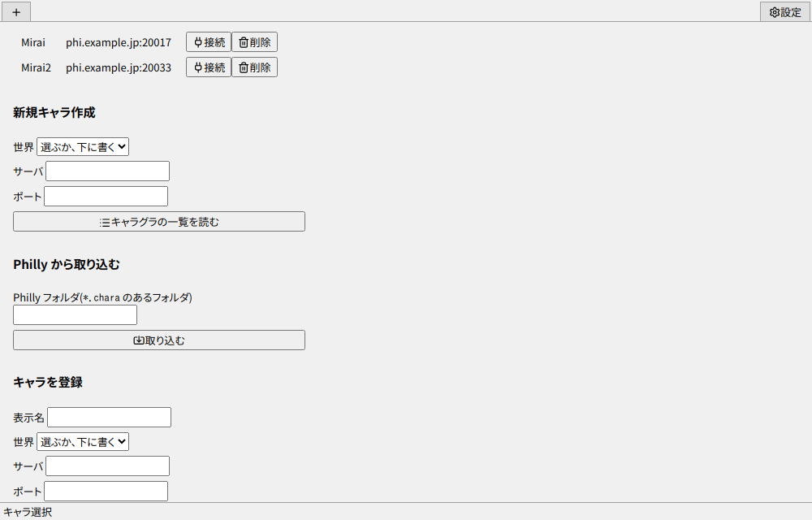
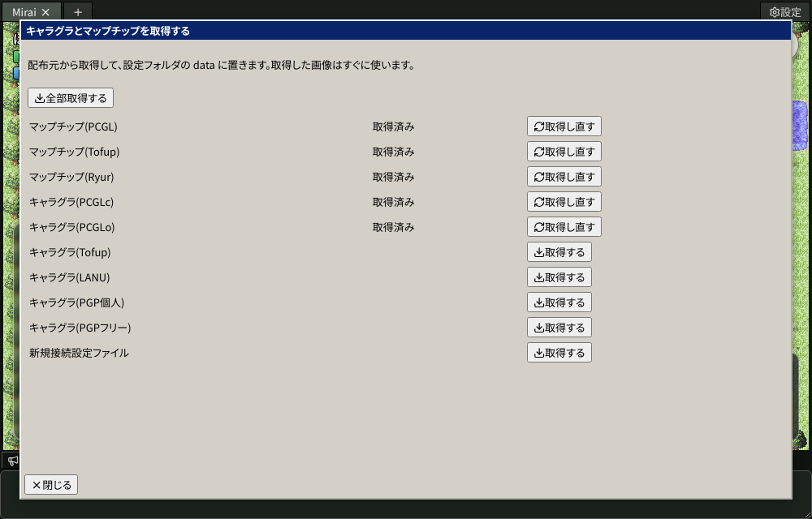
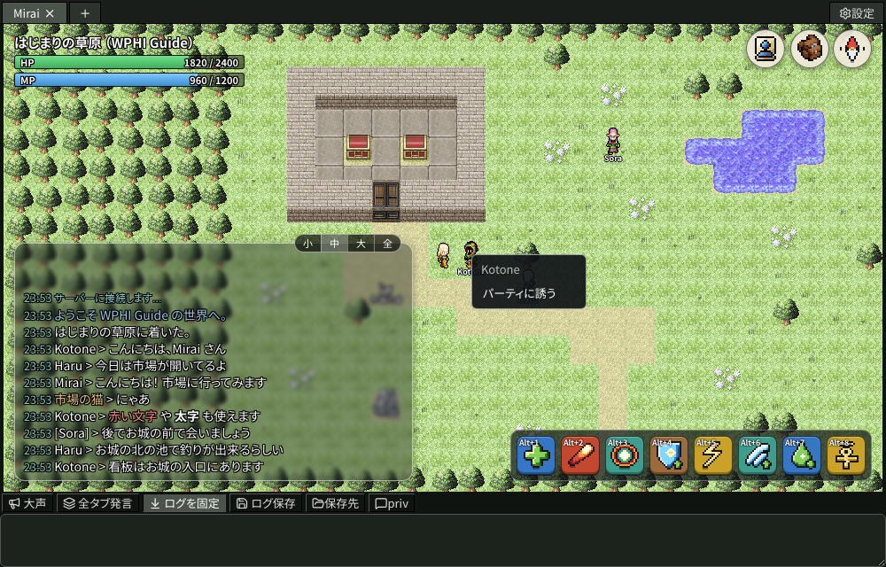
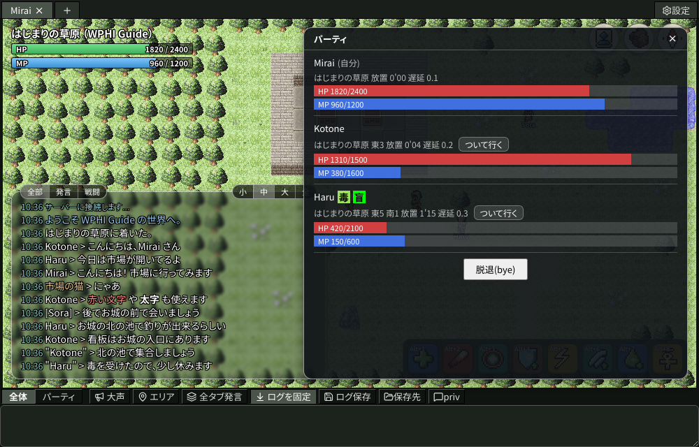
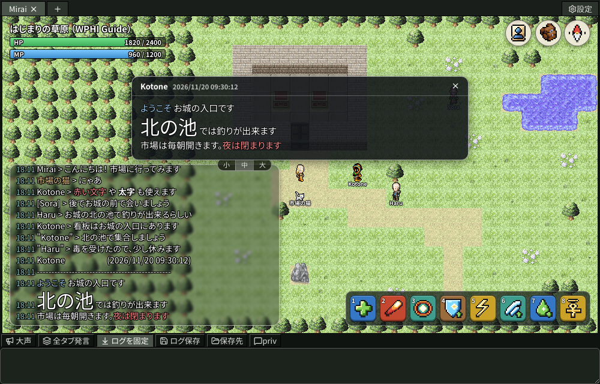
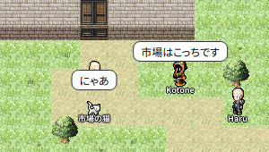
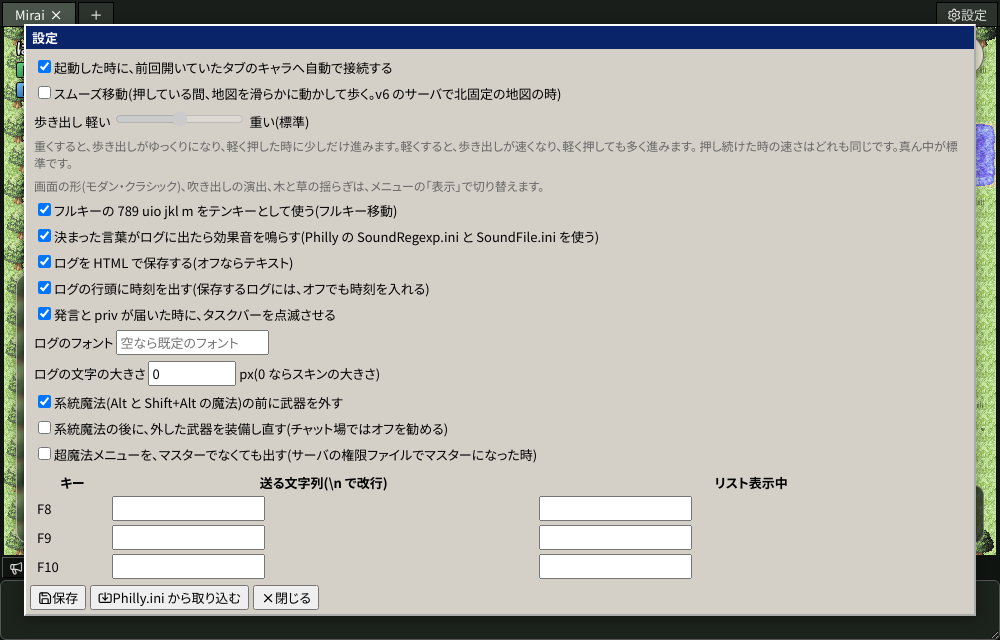
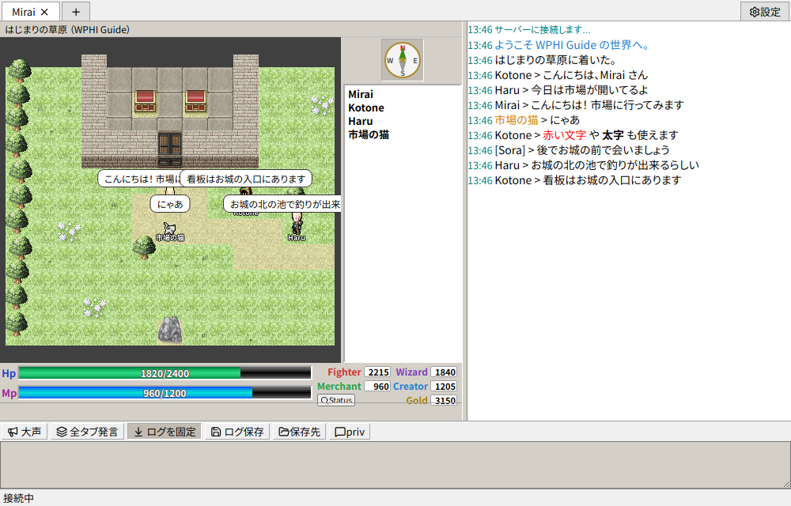

WPHI 利用者ガイド
PHI のクライアント WPHI の使い方
PHI のクライアント WPHI の使い方
このガイドは、v6 プロトコルに対応したサーバ(朱蓮 SYUREN など)で、WPHI の「モダン」の画面を使う前提で書いています。
v6 に対応していないサーバと、Philly と同じ「クラシック」の画面は、15 節にまとめています。
画像は説明の為に作った架空の世界とキャラで撮りました。実際の世界では、その世界のマップチップとキャラグラで表示します。
WPHI のページの「最新の版を取得する」から、OS に合ったファイルを取得してください。
Windows・macOS・Linux の版があります。
どのファイルも署名していないので、初めて開く時に OS が警告を出します。
開き方は WPHI のページの「初めて開く時」に書いています。
新しい版が出ると、起動した時に知らせます。
メニューの「ツール」→「新しい版を確かめる」でも確かめる事が出来ます。
初めて起動すると、キャラを選ぶ画面になります。2 回目からは、前回開いていたタブのキャラへ自動で接続します(設定の先頭で切れます)。

始め方は3つあります。
*.chara のあるフォルダ)を入れ、「取り込む」を押してください。登録していたキャラを取り込み、Philly のキャラグラとマップチップもそのまま使います。設定は取り込まないので、続けて設定の「Philly.ini から取り込む」を押してください
世界の一覧は、新規接続の設定を配布元から自動で取得して作ります。
一覧に無い世界は、サーバとポートを直接書いてください。
登録したキャラの「接続」を押すと、そのキャラでタブが1つ開きます。
上の「＋」で別のキャラのタブを開けば、同時に何人でも遊べます。
Philly のフォルダが無い場合は、キャラグラとマップチップを配布元から取得してください。
メニューの「ツール」→「キャラグラとマップチップを取得する...」で開きます。

接続すると、地図を窓いっぱいに出し、その上に地名・HP・MP・ログを重ねます。

| 場所 | 表示する物 |
|---|---|
| 一番上 | タブ。キャラごとに1つ開きます。× で切断して閉じ、右端の「設定」で設定を開きます |
| 真ん中 | 地図。真ん中が自分です。窓を広げた分だけ、見える範囲が広がります(地図の表示) |
| 左上 | 地名と、HP・MP のバー。毒やパニックの時はバーの色が変わります |
| 右上の丸いボタン | 左からステータス、カバン、方角です。ステータスを押すと、ステータスを詳しくログに出します。カバンは 6 節。方角は北固定の地図では上が北で、回転する地図では向きに合わせて針が回ります |
| 左下 | ログ。発言や出来事を時刻付きで出します。文字は白に黒の縁取りで、色の付いた文字は地図の上で読めるよう薄い色にします |
| ログの右上 | 「小・中・大」で、ログの高さを窓の 20%・42%・65% から選びます |
| 一番下 | 切り替えのボタン(大声、全タブ発言、ログを固定、ログ保存、保存先、priv)と入力欄。入力欄に発言やコマンドを書いて Enter で送ります |
ログは上へスクロールして読み返せます。
上へ戻している間に新しい行が届いても、表示は動きません。
v6 の世界では、地図の右下に覚えている呪文をアイコンで並べます。
アイコンを押すか、Ctrl+1〜8 で左から順に唱えます。
テンキーか矢印キーを押している間、その向きへ歩きます。
入力欄にいる時は文字を書くので、歩く時は Esc でログへ移ってください。
メニューの「表示」→「マップを滑らかに動かす(試験中)」を選ぶと、キーを押した瞬間に歩き出し、地図を滑らせて1マス進みます。
押している時間に合わせて、0.1 秒ごとに1マスずつ途切れずに進みます。軽く押せば1マス、0.25 秒押せば3マスです。
v6 のサーバでは、見た目は道でも通れないバリアーが自分の近く(3マス以内)にあると前もって分かり、当たる前にその場で揺れます。
右上のリュックのボタンか、メニューの「行動」→「カバン」で、カバンを開きます。
v6 の世界では、カバンは世界ごとに使える無限バッグです。
手持ちの 8 個と、どこからでも出し入れ出来るカバンの中身(インベントリ)を、絵で並べます。

カバンは、世界が持ち物の情報とインベントリを有効にしている時だけ使えます。
インベントリの中身は、倉庫のマスに置いた物と同じです。
地図ですぐ隣(上下左右)にいるキャラを左クリックすると、メニューが出ます。
「パーティに誘う」を選ぶと、そのキャラの方を向いてから誘います。相手が y と答えると仲間になります。

パーティに入っている間は、右上のボタンの下に、仲間の名前と HP・MP の細いバーを出します。

右上の小さな一覧か、メニューの「行動」→「パーティの一覧」で、パーティの窓を開きます。Esc で閉じます。

パーティに入っている間は、入力欄の上に「全体」「パーティ」のタブが出ます。
「パーティ」を選ぶと、ログ欄に仲間の発言だけを出し、Enter の発言が仲間だけに届きます。

仲間の一覧とパーティのタブは v6 の世界でだけ出します。
隣のキャラを誘うメニューは、v6 でない世界でも使えます。
入力欄に書いて Enter を押すと発言します。
Shift+Enter で改行し、Ctrl+Enter でパーティに発言します。
priv を受けると、相手ごとに小さな窓を開きます。

看板の前で A を押すと看板を読みます。
読んだ本文はログに流すのに加えて、地図の上に札として出します。
札の見出しには、その看板を書いた人と書いた日時を出します。

札は右上の ×、Esc、歩き出すと閉じます。
書くのは S、消すのは D です。
S で看板のエディタを開きます。

Ctrl+F(macOS は Cmd+F)で、ログの右上に検索の欄を開きます。
メニューの「操作」→「ログを検索」でも開けます。

探せるのはログ欄に残っている行だけです。
古いログは、ログを保存しておけばファイルで探せます。
キー操作は Philly と同じです。
入力欄にいる時は文字を書くので、移動などに使う時は Esc でログへ移ってください。
| キー | 動作 |
|---|---|
| テンキー、矢印(フルキー移動なら U I O J K L M 7 8 9) | 歩く(5 節)。2つの向きを同時に押すと斜め |
| 地図でホイール(中ボタン)をクリック | 追尾移動の始めと終わり |
| Esc | 入力欄からログへ移り、キーを操作に使う。看板の札とカバンを閉じる |
| Tab | 入力欄へ移る |
| Z、X、C | アイテムを拾う、置く、使う |
| Space | 攻撃 |
| A、S、D | 看板を読む、書く、消す |
| Alt+1〜8 | 所持魔法の 1〜8 番目を唱える |
| Alt+W、Alt+E など | 系統魔法(Wizard eye、Eagle eye など) |
| Shift+F5 | 地図を出す、隠す |
| T、Shift+T | 回転する地図、北固定の地図 |
| Ctrl+Tab | 次のタブ |
| Ctrl+F(macOS は Cmd+F) | ログを検索 |
全部のキーはクライアントの要件と挙動の「キー操作」に書いています。
ログに流れた発言や戦闘の行を読み取り、地図のキャラの上に吹き出しや数字を出します。
メニューの「表示」→「吹き出しと HP・MP の増減をマップに出す」で切り替えます。



演出はログの文面から決めています。サーバによって文面が違うと、出ない演出があります。
同じ名前のキャラが複数いる時は、自分に一番近いキャラに出します。
タブの右端の「設定」か、メニューの「ファイル」→「設定...」で開きます。

\n で改行します
設定とキャラの情報は、設定フォルダに置きます。
メニューの「ツール」→「設定フォルダを開く」で開けます。
設定フォルダにはキャラ ID も平文で入っています。
設定フォルダを他人に渡さないでください。
メニューの「表示」で、窓の形を3つから選びます。

v6 に対応していないサーバでは、地図は Philly と同じ 7x7 マスになります。次の物は使えません。